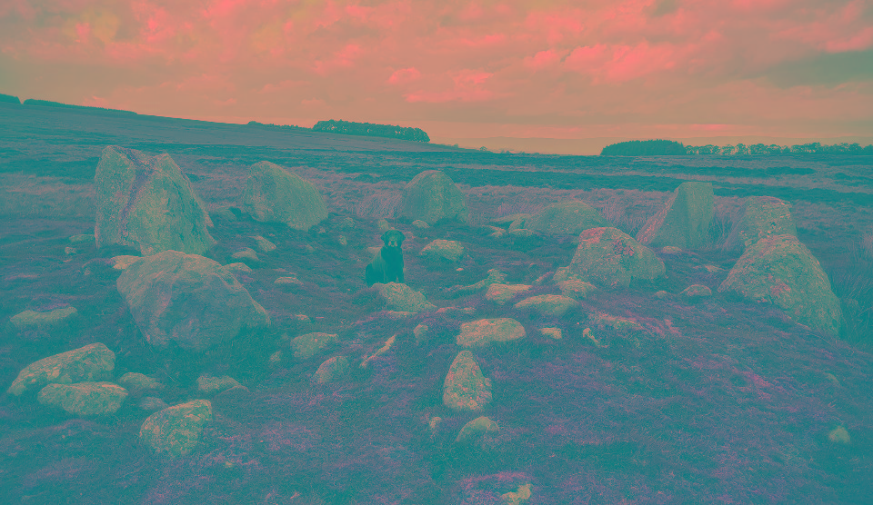

'Cairn Circle'
26th May 2019
OS Grid Ref: SD 94827 22566
Geo URI: geo:54.5910,2.78437
Latitude: 53° 41' 58" N
Longitude: 2° 4' 47" W
Up on Moor Divock/Askham Fell along with the Cop Stone, the Cockpit Circle and others. Deserves to have a name, but apparently doesn't.
